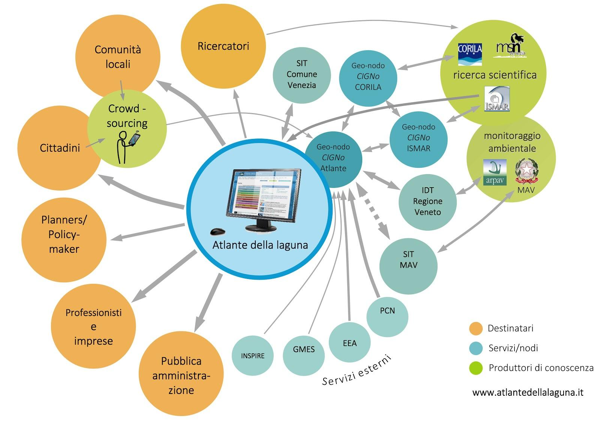
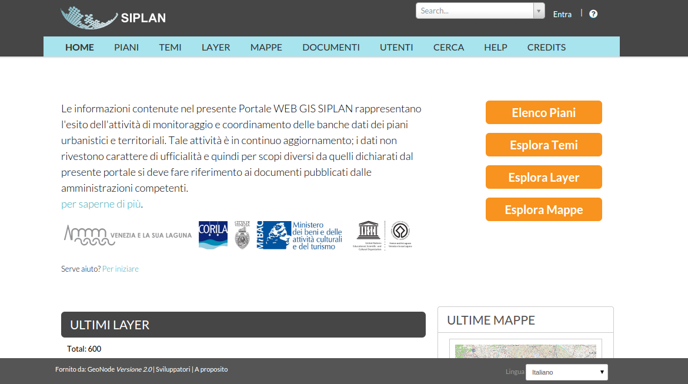
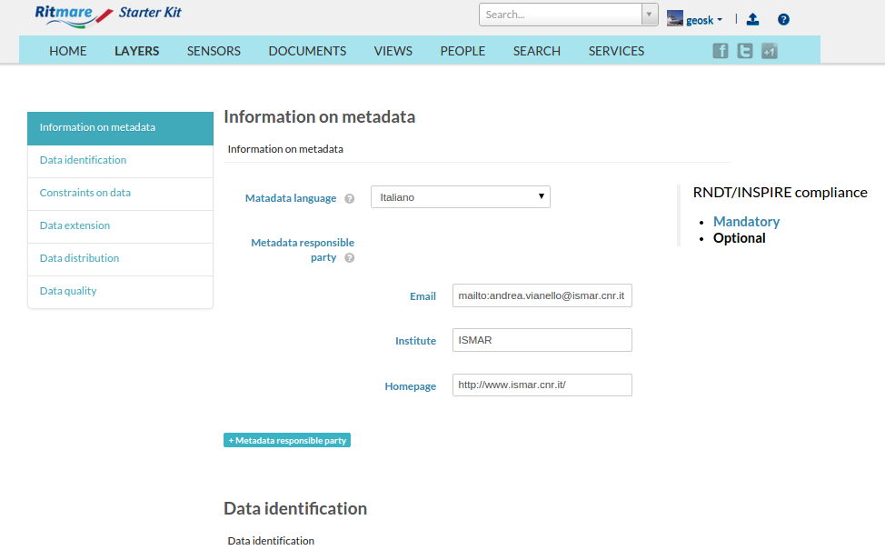
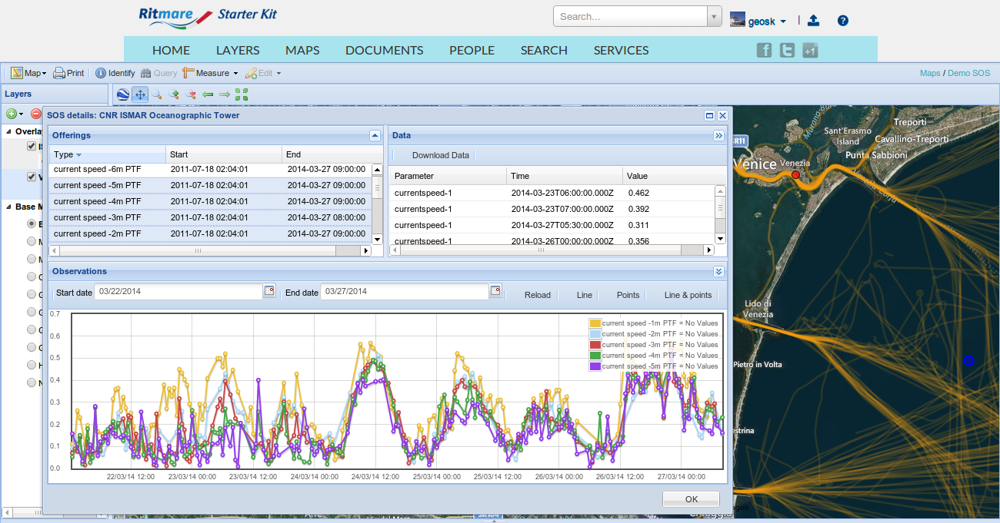
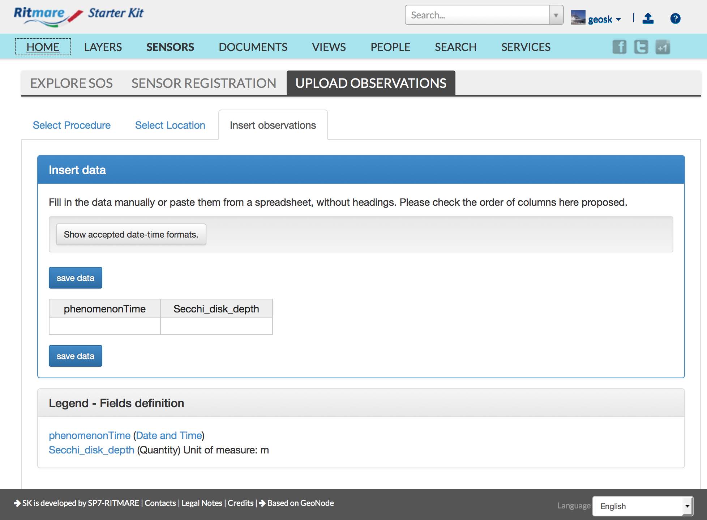
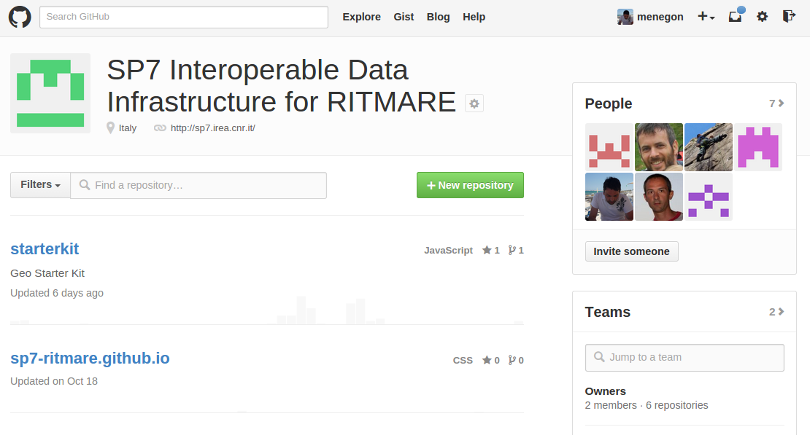
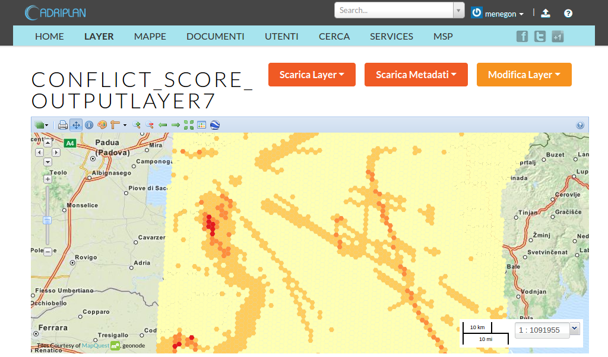

RITMARE Software Suite: strumento abilitate per la condivisione di dati ambientali
S. Menegon & SP7 Development Team
CNR - ISMAR, CNR - IREA
Oristano, 25 Novembre 2014
Gli inizi

Gennaio 2006 - Atlante della laguna: il libro!
a cura di S. Guerzoni, D. Tagliapietra
(CNR-ISMAR)
su iniziativa dell'Osservatorio della Laguna e del Territorio del Comune di Venezia
Raccolta di 103 tavole che descrivono le caratteristiche ambientali della laguna di Venezia e della relativa zona costiera.
Promuove un approccio interdisciplinare alle tematiche ambientali facilitando lo scambio di informazioni tra comunità scientifica e società.
Evoluzione del supporto

|
Atlante della Laguna (2006) |

|
Atlante della Laguna on line (2007): libro cartaceo sul web |

|
Sistema Informativo della Laguna (2008): tecnologia p.mapper/Drupal, WebGIS, mappe interattive |

|
CIGNo (2011): tecnologia GeoNode/Drupal, interoperabilità, sistema federato, modello collaborativo |
Progetto CIGNo: caratteristiche

- Gestione di dati raster, vettoriali, documenti
- Approccio collaborativo (Web 2.0)
- Procedure semplificate per il caricamento dei dati e per la metadatazione Interoperabilità (es. servizi standard)
- Progetto Open Source
La rete dei nodi veneziani
I contenuti

Alcuni numeri:
11 Categorie tematiche,
443 Strati informativi (layer),
53 Mappe (aggregazione di layer),
2500 Utenti/mese
SIPLAN
Sistema Informativo per l'interoperabilità dei dati sulla pianificazione urbanistica e territoriale del Sito Unesco "Venezia e la sua laguna"
600 Layer pubblici e 40 mappe
RITMARE SP7: Infrastruttura interoperabile

RITMARE Software Suite: strategia Bottom-up
abilitare i ricercatori a contribuire autonomamente all'infrastruttura
- abilitazione di nodi indipendenti per la fornitura di dati geospaziali (interni ed esterni a RITMARE):
- mappe/layer
- osservazioni
- documenti
- arricchimento semantico dei metadati (e compilazione assistita):
- Metadati di dettaglio (data-sets, sensori)
- Utilizzo di vocabolari controllati, thesauri, anagrafiche
RITMARE Software Suite: componenti aggiuntivi
RITMARE Software Suite: componenti aggiuntivi
RITMARE Software Suite: componenti aggiuntivi
Distribuzione & Aggiornamento
- Distribuito come virtual appliance pronta all'uso e "pacchettizzata" in OVF (Open Virtualization Format)
- I nuovi aggiornamenti sono rilasciati regolarmente attraverso il Python Package Index (PyPI)
- Help Desk
- Documentazione Online
Software & Licenze
- Public GitHub repository
- Tutto il codice è Open Source e rilasciato con licenza GPL 3
Simulazione della marea e delle correnti della laguna in tempo reale

Modello Open Source SHYFEM
Workflow della simulazione

Maritime Spatial Planning
Links
- http://www.atlatedellallaguna.it/ Portale Atlante della Laguna
- http://siplan.veniceandlagoon.org/ Nodo SIPLAN
- https://github.com/SP7-Ritmare GitHub code sharing repository
- https://pypi.python.org/pypi/starterkit/1.2.2 PyPI package page
- http://sp7.irea.cnr.it/wiki/index.php/Category:Learning Online documentation wiki
- http://geosk.ve.ismar.cnr.it/ RITMARE Software Suite (Demo)
- http://data.adriplan.eu/ Portale dati progetto ADRIPLAN
- http://150.178.42.24/ RITMARE Data Portal (v. 0.1 - Prototype)